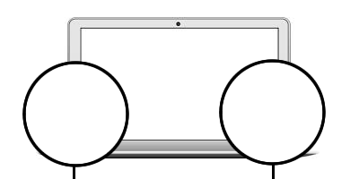
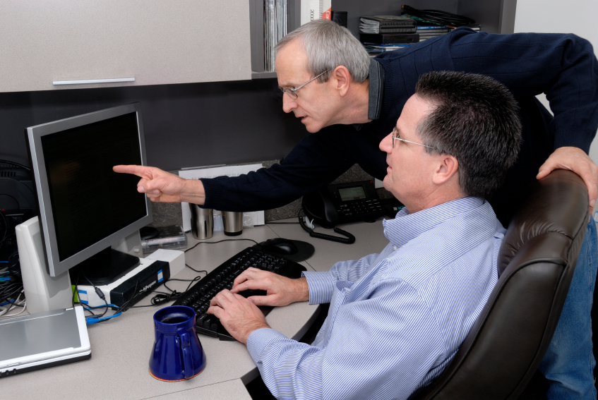

Welcome to Peer Programming Pros!
PPP's is a peer programming project conducted by the crazy good EDA pair of Jasmin Mayfield and David Booth.
Pair programming is an agile software development technique in which two programmers work together at one workstation. One, the driver, writes code while the other, the observer, pointer or navigator, reviews each line of code as it is typed in. The two programmers switch roles frequently.
Pair programming is important to EDA as it mimics practices carried out in a real workplace environment. It's an opportunity to both teach and learn from our peers in a collaborative way.
Reflections
- What worked? When we got stuck with a problem, David did a great job in breaking down what the code was doing and provided clarity.
- What didn't work? A lot of interlap with roles but I think this was inevitable while we are still trying to learn everything. We'd find ourselves making suggestions and researching/ experimenting independently. Once we get better at coding the roles of navigator and driver would remain more intact with less overlap.
- What was it like to pair for the first time? A bit of a challenge and being a total new experience. We found ourselves trying to recall a lot of what we had learnt already. The GPS is valuable for putting what we've learnt into practise - even if we did take a while. I think next time we should pomodoro our time and stay stricter with it.
Overall? Pretty enjoyable. It's actually quite fun to work alongside someone else rather than solitary mode and two brains are better than one!


